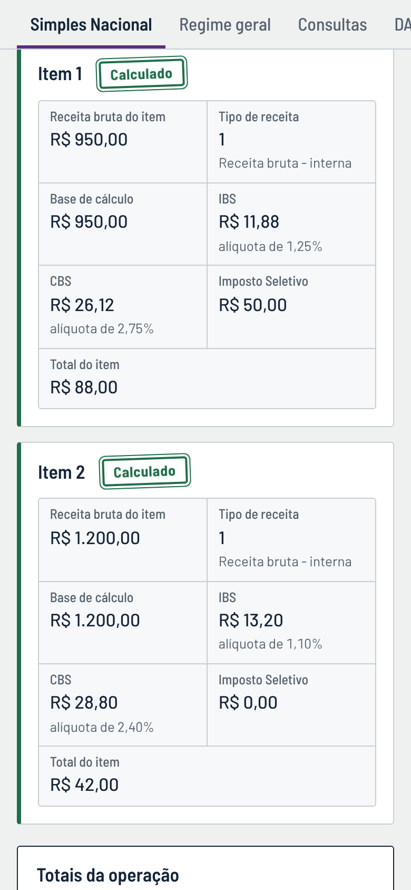
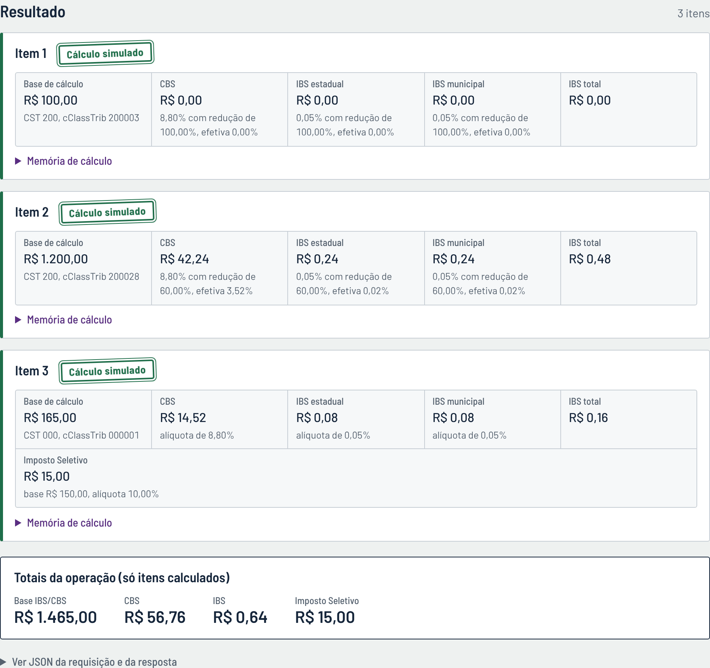

As calculadoras da reforma tributária num painel só
CBS, IBS e Imposto Seletivo do regime geral e do Simples Nacional, mais o gerador de DANFSe, usando os serviços oficiais da Receita Federal. Use direto no navegador, do computador ou do celular, sem instalar nada. Um item por vez ou uma planilha inteira.


Use online
A Central RTC está no ar em central-rtc.taild4c7a5.ts.net. Funciona no navegador do computador e do celular. É aberta a todos: basta criar uma conta. Uma checagem automática contra robôs e spam libera a conta em 1 a 2 minutos.
Abra o endereço e toque em Criar conta. Se preferir, use Criar conta com Google: o nome e o e-mail já vêm preenchidos e você não precisa de senha.
Informe nome e e-mail e escolha uma senha. O nome da empresa é opcional.
Entre em 1 a 2 minutos, com o e-mail e a senha que você escolheu, ou com o Google.
Nunca mexeu com tributos? O guia de uso explica cada tela e cada termo em linguagem simples. O acesso online roda num servidor do próprio projeto e pode ficar fora do ar de vez em quando. Se precisar dele o tempo todo, instale no seu computador.
O que você faz com ela
Cada parte conversa com um serviço oficial. A Central RTC monta as requisições, chama a calculadora certa e organiza a resposta. Nenhum valor é recalculado por fora.
Conforme a NT 2026.005, com o estado de cada item e os códigos de erro explicados.
As 15 atividades vigentes, marcadas como disponíveis ou não para os anexos e o documento da empresa.
Reduções, alíquotas efetivas e Imposto Seletivo. Depois, o XML do grupo de tributação validado no XSD.
cClassTrib, NCM, NBS, alíquotas de referência e descrição dos códigos de erro.
Arraste as NFS-e autorizadas, escolha a situação e baixe tudo num .zip.
Centenas de itens por CSV, com o resultado pronto para o Excel e as respostas completas em JSON.
Como é por dentro
As capturas abaixo foram feitas com o simulador de desenvolvimento do projeto, então os valores são fictícios.
Regime geral
Cada item mostra base, CBS, IBS estadual e municipal, com a redução aplicada e a alíquota efetiva. A memória de cálculo fica a um clique.
A partir de 2027 as alíquotas nominais passam a ser obrigatórias, e o painel mostra ou esconde esses campos conforme a data.

Atividades do Simples
Marque os anexos que a empresa usa e o documento da nota. A tabela aponta o que está disponível e explica por que o resto não está.

DANFSe em lote
Os XMLs com problema são marcados com o motivo, sem travar os outros. Os PDFs prontos podem ser vistos, baixados um a um ou juntos.

Planilha
Antes de processar, o painel aponta linhas com colunas faltando ou dados diferentes dentro da mesma nota. No fim, cada item volta com a linha de origem.

Instalar no seu computador
Não é preciso instalar nada para usar online. Instalar só faz sentido se você quiser a ferramenta inteira na sua máquina. Para isso, você precisa do Docker Desktop (Windows e macOS) ou do Docker com Compose (Linux). Ele baixa o código oficial da Receita, compila e gera o banco de dados.
-
Baixe o projeto.
git clone https://github.com/PedrosHttps/central-rtc.git cd central-rtc
-
Suba os quatro contêineres. A primeira vez leva alguns minutos.
docker compose up -d --build
-
Abra
http://localhost:3000. As bolinhas no topo ficam verdes quando cada serviço responde.
Automatize pela linha de comando
O mesmo motor do painel roda sem navegador. Dá para agendar no cron ou no Agendador de Tarefas do Windows.
# os três serviços estão no ar? node cli.js status # uma planilha de itens do Simples vira planilha de resultados node cli.js lote simples notas-novembro.csv # uma pasta de NFS-e vira uma pasta de PDFs node cli.js danfse ./xmls -o ./pdfs
Sai com código 0 quando tudo deu certo, 1 quando um serviço está fora e 2 quando algum item ou nota falhou.
Como as peças se conectam
O painel e a linha de comando falam com três serviços independentes, cada um vindo do repositório oficial da Receita Federal.
Node.js, sem dependências
Antes de usar
Não é um produto da Receita
É um projeto independente que usa os serviços de código aberto publicados por ela.
Confira os resultados
As regras da reforma ainda mudam. Atualize os serviços com frequência e revise os valores antes de emitir documentos.
DANFSe só de nota autorizada
O DANFSe é o documento auxiliar de uma NFS-e já emitida. Use os XMLs que o emissor devolveu.